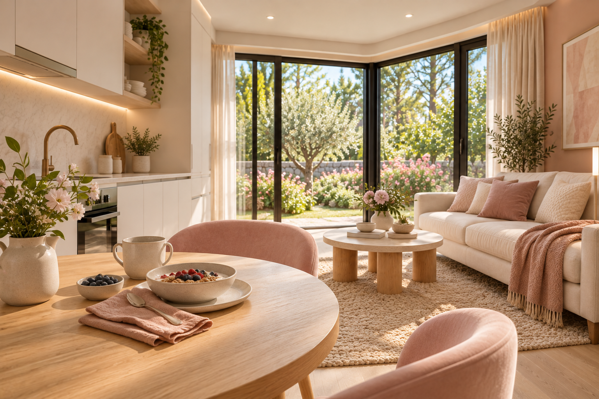
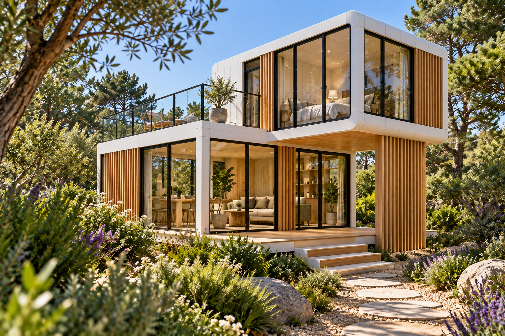
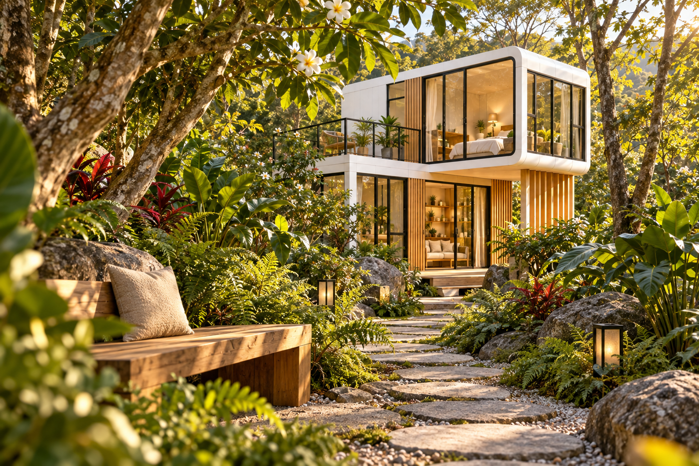

MyLodge Free
MYLODGE FREE / EVERYDAY RETREAT
가까이에서 만나는 나만의 별장 라이프
- 혼자 쉬어도, 함께 즐겨도 좋은 공간
- 가족·취미·웰니스로 이어지는 만남
- 휴식과 교류가 어우러지는 별장 라이프
FIND YOUR PEOPLE
나와 닮은 취향을 골라보세요
 MyLodge
MyLodge함께 자라는 가족의 추억
아이와 보내는 느긋한 아침, 온 가족이 모이는 저녁 세대가 함께 즐길 별장 생활을 그려보세요
둘만의 리듬으로 보내는 시간
함께 요리하고 산책하며 바쁜 일상에서 놓쳤던 대화를 이어가세요
좋아하는 일로 가까워지는 사이
취미와 활동이 만남으로 이어지는 휴가 새로운 사람과 함께할 즐거움을 발견해 보세요
좋은 대화가 새로운 가능성으로
편안한 라운지에서 나누는 생각과 경험 일과 만남이 자연스럽게 이어지는 시간을 제안합니다
나를 위한 여백을 채우는 하루
아무것도 서두르지 않는 아침 조용한 공간에서 몸과 마음의 속도를 되찾아 보세요
관심 취향을 살펴보는 화면입니다 커뮤니티 운영과 배정은 상품별로 안내합니다
MyLodge Free 공간 사진 더 보기
기존 MyLodge Free 공간 분위기 참고용 AI 콘셉트입니다. Private Mansion의 실제 시설 사진이 아닙니다.







MyLodge Free MyLodge Free
MyLodge Free MyLodge Free
MyLodge Free1 / 3
 MyLodge Free
MyLodge Free MyLodge Free
MyLodge Free MyLodge Free
MyLodge Free.png) MyLodge Free
MyLodge Free1 / 2
 MyLodge Free
MyLodge FreeEXPLORE YOUR FUTURE STAY
MyLodge Free 공간을 직접 둘러보세요
- 사진으로 만나는 공간의 분위기
- 3D로 둘러보는 1층과 2층
- 달력 위에 그려보는 다음 휴가
MYLODGE → HANZCITY
별장 라이프에서 더 넓은 일상으로
- 지금 시작
- HanzCity 회원가입·로그인상단 회원가입 버튼으로 연결
- 준비 중
- 더 다양한 라이프스타일 서비스새로운 서비스와 계정 연계는 순차 안내
MyLodge를 출발점으로 HanzCity의 더 넓은 생활 서비스를 준비합니다 상품 신청·계약과 서비스별 이용은 별도 안내에 따릅니다
EXPLORE THE SPACE
마음에 드는 공간부터 둘러보세요
 MyLodge
MyLodge함께 머물고 싶은 거실과 주방
식탁에서 시작해 거실로 이어지는 대화 우리만의 시간을 채우는 공간을 둘러보세요
문을 열기 전부터 시작되는 설렘
밝은 외관과 탁 트인 창으로 만나는 별장의 첫인상 나의 휴식에 어울리는 집을 그려보세요
실내의 편안함을 바깥까지
커피 한 잔과 함께하는 아침, 바람을 느끼는 저녁 테라스에서 휴식의 폭을 넓혀보세요
함께하는 공간과 나만의 쉼을 한 집에
기존 27평 모델의 1층 약 17평과 2층 약 10평 구성을 3D 조감도에서 직접 둘러보세요
 MyLodge Free
MyLodge Free